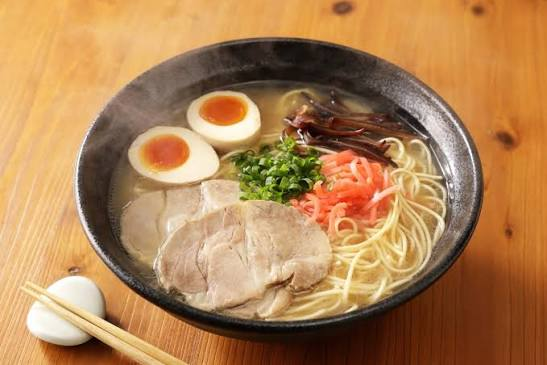
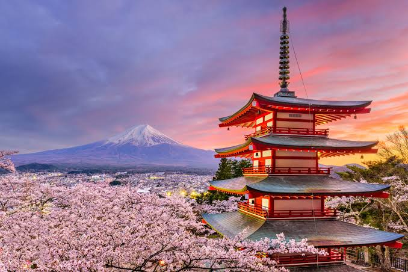
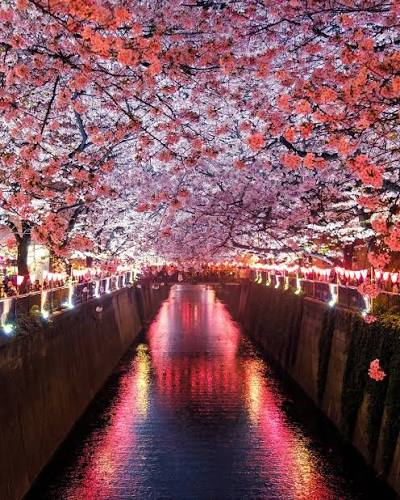

llitle bit information About Japan
Anime
Japan is the birthplace of anime, known for its unique art styles, exciting stories, and unforgettable characters.

Food
Japanese food offers delicious flavors and fresh ingredients, with popular dishes like sushi, ramen, and tempura.

Landscapes
Japan features beautiful landscapes, from Mount Fuji and lush forests to peaceful lakes and scenic mountains.

Iconic Flowers
Japan is famous for its cherry blossoms, which bloom in spring and symbolize the beauty of nature and new beginnings.